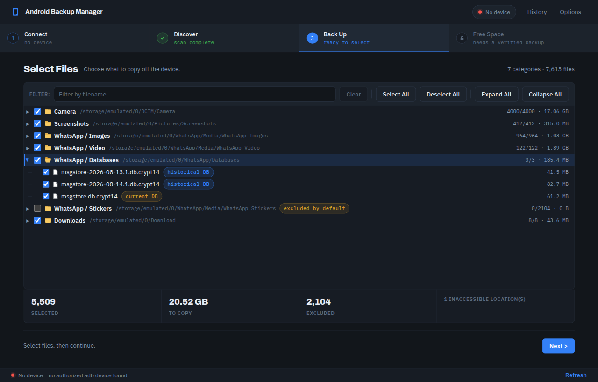
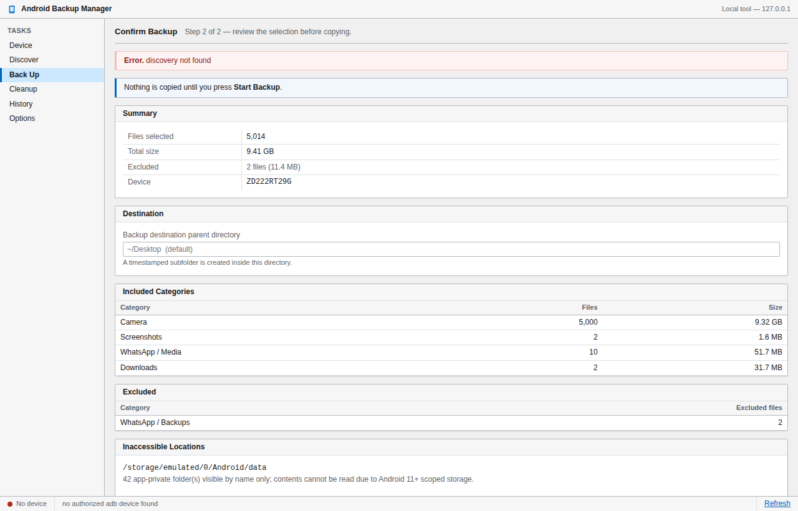

Local-first Android backup
Clear your phone without losing a thing.
Copies your photos, videos and files onto your own computer, checks every single one with SHA-256, and only then offers to free up space — behind a confirmation you have to type out. No account, no cloud, no upload.
✓ Free & open source ✓ No account ✓ Nothing leaves your computer

From the real phone cleanup this tool was built to repeat — 10,330 files moved and verified, nothing lost.
How it works
Four steps, and you can stop after any of them.
Each stage is a separate, deliberate action. Nothing cascades into the next on its own.
Discover
Reads your phone over USB and lists what's there. Strictly read-only — nothing is copied, changed or deleted.
Choose
Tick exactly what you want in a real folder tree. Whole categories, single folders, or one file.
Back up
Copies to your computer, then re-hashes every file. A copy isn't "done" until its hash matches the original.
Free up space
A separate visit. Re-checks each file against the phone right now, then deletes only proven matches.
Verification
Every byte accounted for.
Each file is hashed on the phone and again on your computer. If the two don't match exactly, it's flagged and never becomes eligible for deletion.
Safety by design
A finished backup does not authorise deletion.
Most tools treat "backed up" and "safe to delete" as the same moment. This one refuses to. Deleting is a separate visit, and every guard is re-checked at the instant of deletion — not when the backup ran.

Why it's different
Built for the one job cloud backup keeps getting wrong.
It stays on your machine
There is no server, no account and no upload. The app runs on your computer and talks to your phone over the cable. Your photos are never anyone else's problem.
Your real folder structure
Camera, Screenshots, Downloads, WhatsApp media and anything else you've made — shown as the tree it actually is, so you pick with full context instead of guessing.
A receipt for everything
Every run writes a manifest and a plain-text report — what moved, what was verified, what was skipped and why. Auditable months later, not a black box.
Download
Install it and plug in your phone.
Free, open source, and yours to keep. No sign-up.
Questions
Before you trust it with your photos.
Does anything get uploaded?
No. There is no server and no account. The app runs on your computer, reads your phone over the USB cable, and writes to a folder you choose. It works with your Wi-Fi off.
Could it delete something I still wanted?
Deletion is a separate step that never runs on its own, and it only ever considers files whose hash still matches a verified backup at that exact moment. You also have to type a confirmation phrase and tick an acknowledgement, and there's a dry run that shows you the full list while removing nothing.
What can't it reach?
Android 11 and later seal app-private storage, so data some apps keep only inside their own sandbox can't be read by any tool without root. The app lists those locations by name and tells you plainly that they were not backed up, rather than quietly skipping them.
Do I need to know what adb is?
No. On Ubuntu the package pulls it in and configures USB permissions. On Windows the app finds it if it's installed and offers to fetch Google's official copy if not. You just turn on USB debugging and plug the phone in.
Is it really free?
Yes — free and open source. You can read every line, including exactly what the deletion path does, and build it yourself if you'd rather not trust a download.